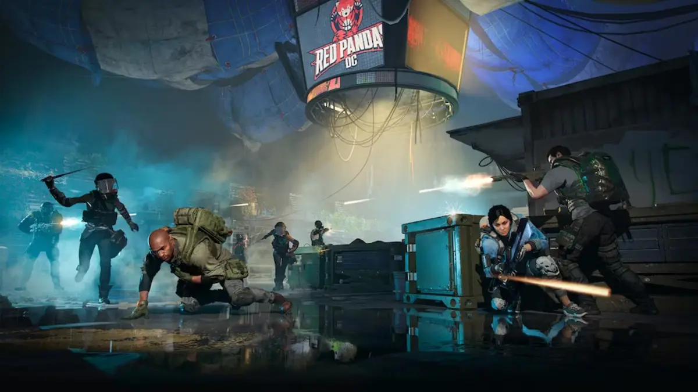

Progressão / Otimização
Progressão além da build base
Primeiro você monta uma build forte. Depois usa Escalation para elevar dano, eficiência e sinergia através de Prototype Gear e Augments.
Prototype Gear traz atributos mais fortes e Augments especiais para builds avançadas. Os itens podem cair em Escalation ou ser criados a partir de equipamentos elegíveis.
Progressão
Builds
Farm
Endgame
Ver prioridades